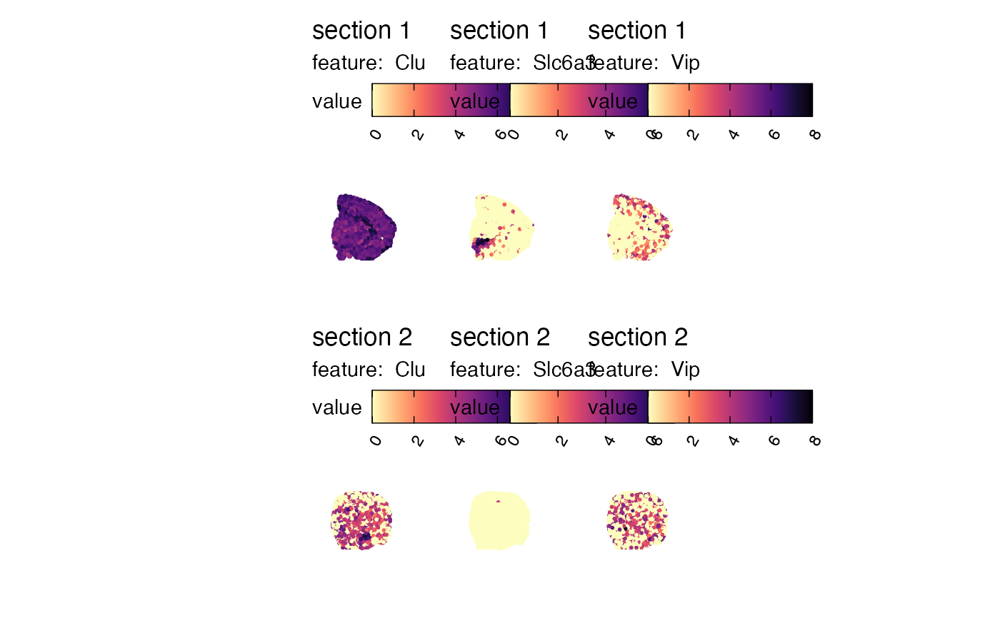
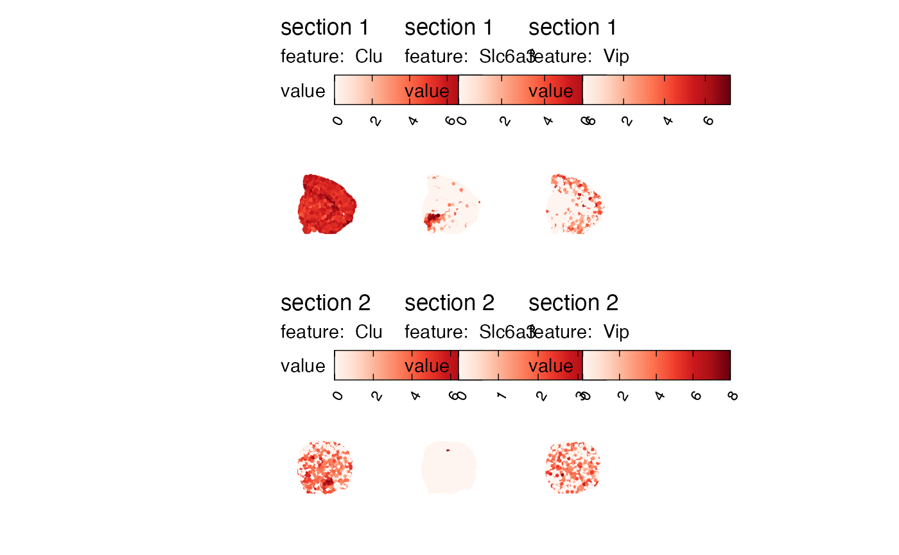
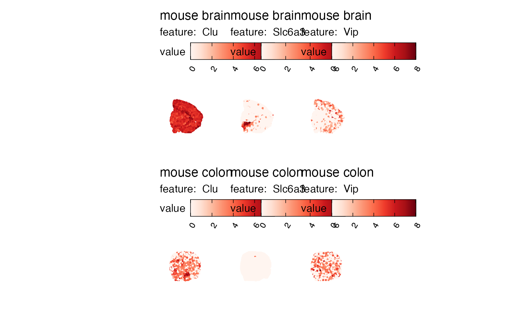
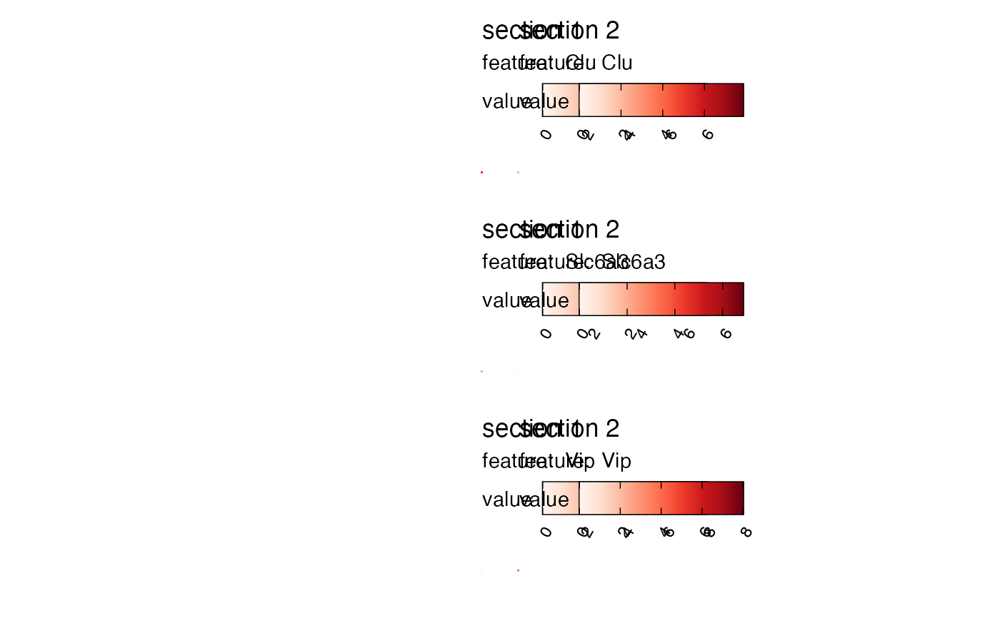
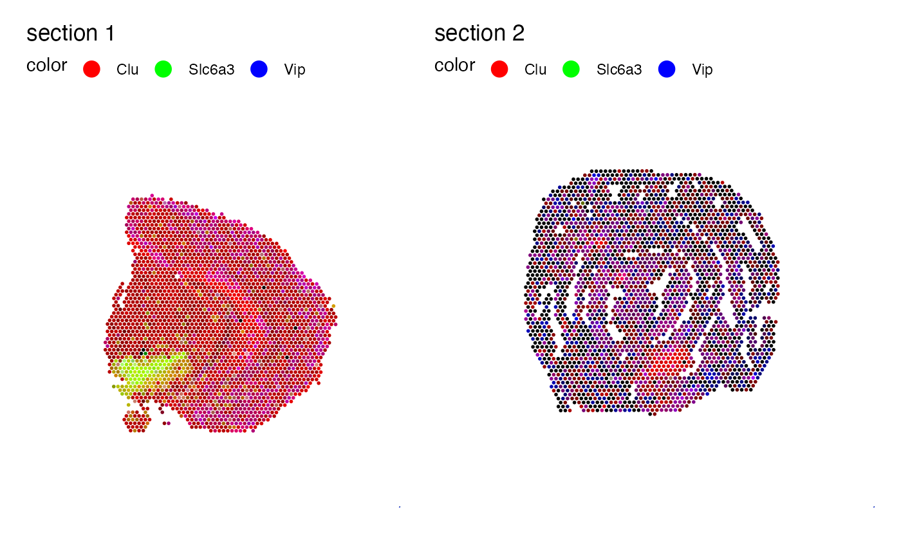
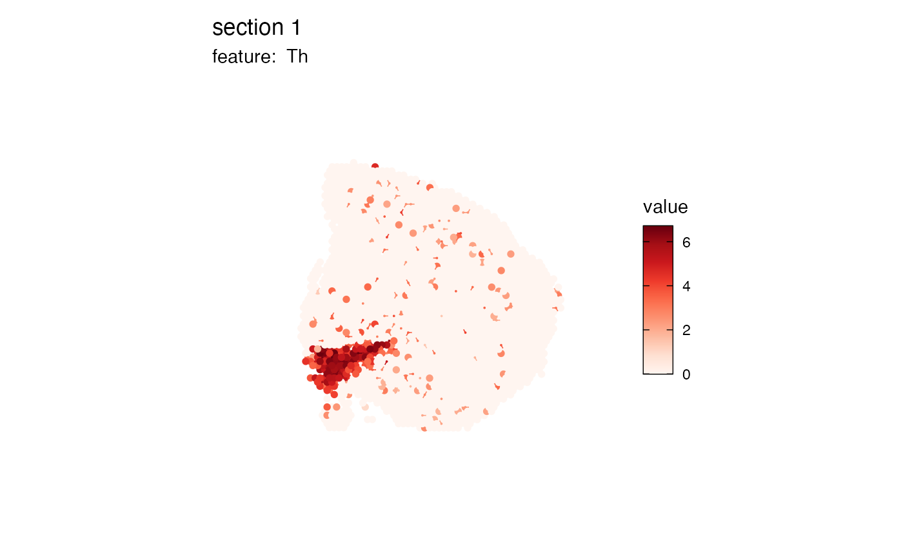

Map numeric features
visualize-features.RdMapFeatures can be used to map numeric features to spots where the
values are encoded as colors. If multiple features and samples are provided, these
will be plotted individually and arranged into a grid of subplots.
Usage
MapFeatures(object, ...)
# S3 method for default
MapFeatures(
object,
crop_area = NULL,
pt_size = 1,
pt_alpha = 1,
pt_stroke = 0,
scale_alpha = FALSE,
section_number = NULL,
label_by = NULL,
ncol = NULL,
colors = RColorBrewer::brewer.pal(n = 9, name = "Reds"),
center_zero = FALSE,
scale = c("shared", "free"),
arrange_features = c("col", "row"),
dims = NULL,
coords_columns = c("pxl_col_in_fullres", "pxl_row_in_fullres"),
return_plot_list = FALSE,
drop_na = FALSE,
blend = FALSE,
blend_order = 1:3,
add_scalebar = FALSE,
scalebar_gg = NULL,
scalebar_height = 0.05,
scalebar_position = c(0.8, 0.8),
...
)
# S3 method for Seurat
MapFeatures(
object,
features,
slot = "data",
image_use = NULL,
coords_use = "raw",
crop_area = NULL,
pt_size = 1,
pt_alpha = 1,
pt_stroke = 0,
scale_alpha = FALSE,
section_number = NULL,
label_by = NULL,
ncol = NULL,
colors = RColorBrewer::brewer.pal(n = 9, name = "Reds"),
center_zero = FALSE,
scale = c("shared", "free"),
arrange_features = c("col", "row"),
drop_na = FALSE,
blend = FALSE,
blend_order = 1:3,
override_plot_dims = FALSE,
max_cutoff = NULL,
min_cutoff = NULL,
return_plot_list = FALSE,
add_scalebar = FALSE,
scalebar_height = 0.05,
scalebar_gg = scalebar(x = 500, text_height = 5),
scalebar_position = c(0.8, 0.7),
...
)Arguments
- object
An object
- ...
Arguments passed to other methods
- crop_area
A numeric vector of length 4 specifying a rectangular area to crop the plots by. These numbers should be within 0-1. The x-axis is goes from left=0 to right=1 and the y axis is goes from top=0 to bottom=1. The order of the values are specified as follows:
crop_area = c(left, top, right, bottom). The crop area will be used on all tissue sections and cannot be set for each section individually. using crop areas of different sizes on different sections can lead to unwanted side effects as the point sizes will remain constant. In this case it is better to generate separate plots for different tissue sections.- pt_size
A numeric value specifying the point size passed to
geom_point- pt_alpha
A numeric value between 0 and 1 specifying the point opacity passed to
geom_point. A value of 0 will make the points completely transparent and a value of 1 will make the points completely opaque.- pt_stroke
A numeric specifying the point stroke width
- scale_alpha
Logical specifying if the spot colors should be scaled together with the feature values. This can be useful when you want to highlight regions with higher feature values while making the background tissue visible.
- section_number
An integer select a tissue section number to subset data by
- label_by
Character of length 1 providing a column name in
objectwith labels that can be used to provide a title for each subplot. This column should have 1 label per tissue section. This can be useful when you need to provide more detailed information about your tissue sections.- ncol
Integer value specifying the number of columns in the output patchwork. This parameter will only have an effect when the number of features provided is 1. Otherwise, the patchwork will be arranged based on the
arrange_featuresparameter.- colors
A character vector of colors to use for the color scale. The colors should preferably consist of a set of colors from a scientific color palette designed for sequential data. Some useful palettes are available in the
RColorBrewer,viridisandscicoR packages.- center_zero
A logical specifying whether the color scale should be centered at 0
- scale
A character vector of length 1 specifying one of "shared" or "free" which will determine how the color bars are structured. If scale is set to "shared", the color bars for feature values will be shared across samples. If scale is set to "free", the color bars will be independent.
- arrange_features
One of "row" or "col". "col" will put the features in columns and samples in rows and "row" will transpose the arrangement
- dims
A tibble with information about the tissue sections. This information is used to determine the limits of the plot area. If
dimsis not provided, the limits will be computed directly from the spatial coordinates provided inobject.- coords_columns
a character vector of length 2 specifying the names of the columns in
objectholding the spatial coordinates- return_plot_list
A logical specifying if a `patchwork` or a list of `ggplot` objects should be returned. By default, a `patchwork` is returned, but it can sometimes be useful to obtain the list of `ggplot` objects if you want to manipulate each sub plot independently.
- drop_na
A logical specifying if NA values should be dropped
- blend
a logical specifying whether blending should be used. See the section about color blending below for more information.
- blend_order
An integer vector of length 2-3 specifying the order to blend features by. Only active when
blend = TRUE. See color blending for more information.- add_scalebar
A logical specifying if a scale bar should be added to the plots
- scalebar_gg
A 'ggplot' object generated with
scalebar. The appearance of the scale bar is styled by passing parameters toscalebar.- scalebar_height
A numeric value specifying the height of the scale bar relative to the height of the full plot area. Has to be a value between 0 and 1. The title of the scale bar is scaled with the plot and might disappear if the down-scaled text size is too small. Increasing the height of the scale bar can sometimes be useful to increase the text size to make it more visible in small plots.
- scalebar_position
A numeric vector of length 2 specifying the position of the scale bar relative to the plot area. Default is to place it in the top right corner.
- features
A character vector of features to plot. These features need to be fetchable with
link{FetchData}- slot
Slot to pull features values from
- image_use
A character specifying image type to use
- coords_use
A character specifying coordinate type to use
- override_plot_dims
A logical specifying whether the image dimensions should be used to define the plot area. Setting
override_plot_dimscan be useful in situations where the tissue section only covers a small fraction of the capture area, which will create a lot of white space in the plots.- min_cutoff, max_cutoff
A numeric value between 0-1 specifying either a lower (
min_cutoff) or upper (max_cutoff) limit for the data usingquantile. These arguments can be useful to make sure that the color map doesn't get dominated by outliers.
Details
Note that you can only plot numeric features with MapFeatures,
for example: gene expression, QC metrics or dimensionality reduction vectors.
If you want to plot categorical features, use MapLabels instead.
color blending
Color blending can only be used with 2 or three features. If blending is activated, the feature values will be rescaled and encoded as RGB colors. RGB allows for three channels to be included, hence the reason why you can only use 2-3 features. When blending feature values you will only get 1 plot per tissue section.
Colors can be mixed to produce new colors; for example, if two features have similar values in one spot and are encoded as blue and red, the mixed color will be purple.
blend_order allows you to flip the order of the features so that each feature
is provided with a color of choice. By default, the order is 1, 2, 3 which means that the
first feature is "red", the second is "green" and the last feature is "blue".
See also
Other spatial-visualization-methods:
AnglePlot(),
FeatureViewer(),
ImagePlot(),
MapFeaturesSummary(),
MapLabelsSummary(),
MapLabels(),
MapMultipleFeatures()
Other spatial-visualization-methods:
AnglePlot(),
FeatureViewer(),
ImagePlot(),
MapFeaturesSummary(),
MapLabelsSummary(),
MapLabels(),
MapMultipleFeatures()
Examples
library(semla)
if (!requireNamespace("viridis"))
install.packages("viridis")
library(viridis)
library(ggplot2)
# Load example Visium data
se_mbrain <- readRDS(system.file("extdata/mousebrain", "se_mbrain", package = "semla"))
se_mcolon <- readRDS(system.file("extdata/mousecolon", "se_mcolon", package = "semla"))
se_merged <- MergeSTData(se_mbrain, se_mcolon)
if (FALSE) {
# Select features
selected_features <- c("Clu", "Slc6a3", "Vip")
# Plot selected features with custom colors
MapFeatures(se_merged, features = selected_features, colors = magma(n = 11, direction = -1))
# Plot selected features with color bars scaled individually for each feature and sample
MapFeatures(se_merged, features = selected_features, scale = "free")
# Plot selected features and add custom labels for subplots
se_merged$sample_id <- ifelse(GetStaffli(se_merged)@meta_data$sampleID == "1",
"mouse brain",
"mouse colon")
MapFeatures(se_merged, features = selected_features, label_by = "sample_id")
# Plot selected features arranged by rows instead of columns
MapFeatures(se_merged, features = selected_features, arrange_features = "row")
# Blend features
MapFeatures(se_merged, features = selected_features, blend = TRUE)
}
# The output is a patchwork object which is easy to manipulate
selected_feature <- "Th"
# Move legend to right side of plot
MapFeatures(se_mbrain, features = selected_feature, pt_size = 2) &
theme(legend.position = "right",
legend.text = element_text(angle = 0, hjust = 0))

# Remove titles
MapFeatures(se_mbrain, features = selected_feature, pt_size = 2) &
theme(plot.title = element_blank(),
plot.subtitle = element_blank())

# Create a dark theme
MapFeatures(se_mbrain, features = selected_feature, pt_size = 2,
colors = viridis(n = 11)) &
theme(plot.background = element_rect(fill = "black"),
panel.background = element_rect(fill = "black"),
plot.title = element_text(colour = "white"),
plot.subtitle = element_text(colour = "white"),
legend.text = element_text(colour = "white"),
legend.title = element_text(colour = "white"))

# Add a background and axes to the plot
MapFeatures(se_mbrain, features = selected_feature, pt_size = 2) &
theme(panel.background = element_rect(fill = "lightgray"),
axis.text = element_text())

# Move legend
MapFeatures(se_mbrain, features = selected_feature, pt_size = 2) &
theme(panel.background = element_rect(fill = "lightgray"),
legend.justification = 1)

# Change title of fill aesthetic
MapFeatures(se_mbrain, features = selected_feature, pt_size = 2) &
labs(title = "Gene expression")
